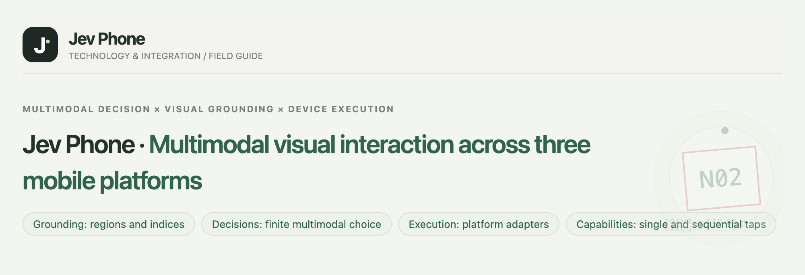
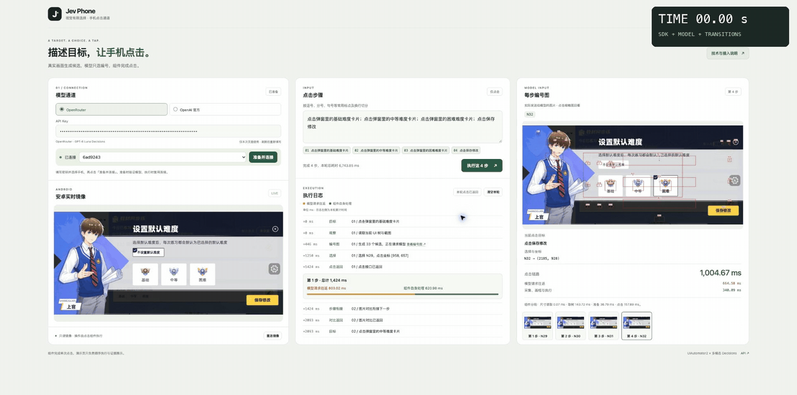
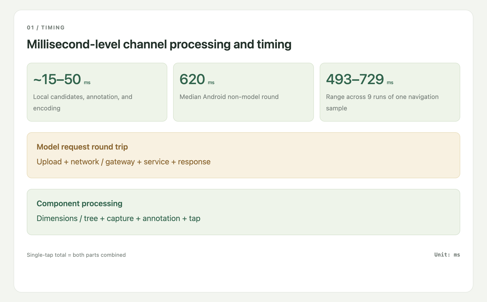
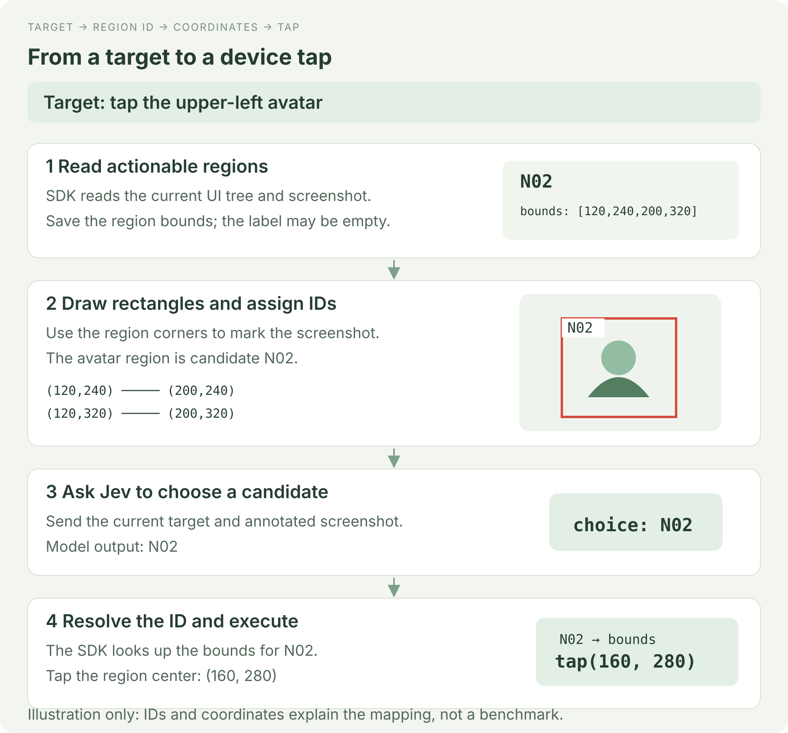
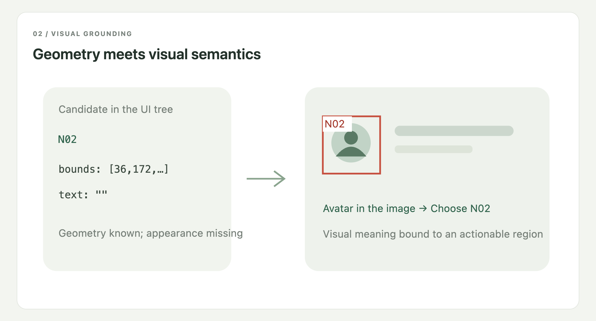
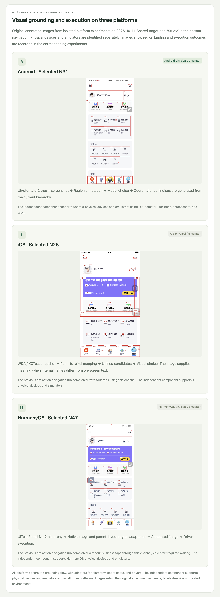

A multimodal tap SDK for three mobile platforms, with millisecond-level local processing
Android · iOS · HarmonyOS
Economical, fast, accurate
Jev Phone connects Jev multimodal decisions to mobile devices, providing an independent tap component for existing agents, testing platforms, and scripts. Your system supplies a target; the SDK locates it in the current screen and executes the tap.
It handles the gap between knowing what to operate and acting on the device. Keep your own planner, cache, and business logic without importing the complete AI Phone framework.

Four consecutive taps on a real Android device: Basic → Medium → Hard → Save. The difficulty dialog is already open at the start; Hard is saved at the end. The stopwatch follows real elapsed time; playback is not accelerated.

| Step | Model round trip | SDK local processing | Page stability wait | Complete step |
|---|---|---|---|---|
| Basic | 763.28 ms | 490.99 ms | 658.00 ms | 1,912.27 ms |
| Medium | 646.39 ms | 289.80 ms | 665.00 ms | 1,601.19 ms |
| Hard | 647.78 ms | 296.26 ms | 702.00 ms | 1,646.04 ms |
| Save | 706.62 ms | 301.97 ms | 0.00 ms | 1,008.59 ms |
Complete-step time includes waiting for the page to stabilize after the tap, using consecutive screenshots to detect stability. The final step has no following step and adds no stability wait. Step 1 is below 2 seconds; steps 2–4 are each below 1.7 seconds. Actual run time: 6,170.82ms. Local SDK processing runs on a millisecond timescale; model round-trip latency depends on your network conditions and model-service response time, and is the main source of variation in complete-step timing.
Local candidate processing, annotation, and encoding took 15–50ms in the existing Android experiment. The non-model round had a 620ms median and a 493–729ms range across nine runs of one navigation sample. These measurements exclude model requests, initialization, and screen settling.
Complete step time includes capture, candidate processing, the model round trip, the tap, and the transition following that step. Full stage-by-stage records, Chinese.

The current multimodal Jev integration uses a finite-choice decision interface. It interprets the image and selects a supplied candidate; it does not directly return a device action or executable tap coordinates through this integration. The SDK therefore bridges the model's choice to an actual device operation.
The component obtains actionable element bounds from the UI tree, uses their four corners to draw rectangles on the screenshot, and assigns IDs. Jev receives the current target and annotated image and returns an ID. The SDK looks up that element, computes its center, and asks the platform driver to tap it. Bounds are stored as the upper-left and lower-right coordinates, which determine all four corners. The actual annotated image also marks tap centers with red dots and leader lines, places labels to avoid collisions, and shrinks overlapping display boxes around their original centers. These display adjustments do not change candidate bounds or tap coordinates.

The rectangle gets its geometry from the UI tree, while the screenshot supplies visible text, icons, and appearance. A node can have an empty label yet display an avatar. In that case, Jev identifies the avatar in the image and chooses its ID; the SDK uses the same ID to recover the known bounds. This binds a multimodal choice to an executable element.

Three adapters are implemented: Android uses UiAutomator2, iOS uses WDA / XCTest, and HarmonyOS uses UITest / hmdriver2. They normalize hierarchies, screenshots, display dimensions, and taps into the same candidate-selection flow. iOS also maps screenshot pixels to WDA points. The SDK supports physical devices and emulators, with single and sequential taps through the same interface.
Before use, prepare an authorized, unlocked device and its platform service, along with the appropriate model credentials:
| Platform | Preparation |
|---|---|
| Android | ADB recognizes the device; USB debugging is authorized and UiAutomator2 can run. |
| iOS | Developer Mode and trust are configured on the physical device; a signed, running WDA service is reachable. |
| HarmonyOS | HDC recognizes the authorized device and UITest / hmdriver2 can access it. |
Device preparation guide, Chinese. The original three-platform figures below show numbered regions and their execution binding.

Add phone taps to your existing program: prepare the device service and model credentials, create a Clicker for the target platform, then call click(target) for one tap or run(text) for a sequence. The SDK returns selected regions, coordinates, driver status, and stage timing so your system can continue its workflow.
No Demo webpage or database is required. Use AndroidClicker, IOSClicker, or HarmonyClicker; the detailed integration guide covers provider configuration and error handling.
SDK guide, Chinese · Device setup, Chinese · Example · Parallel devices
The SDK currently supports single and sequential taps on Android, iOS, and HarmonyOS physical devices and emulators. It captures the screen, builds candidates, obtains a model choice, executes the tap, and returns results and timing.
Text input, scrolling, long press, and more gestures remain future extensions. Existing systems continue to provide planning, business assertions, app launch, and device scheduling, integrating them around the tap component.
Version, upgrades and maintenance · Current version: 0.1.1.
Use Python 3.10+ (for example, python3.11). The commands below target macOS / Linux. This repository is private: access permission and GitHub Git authentication are required. Without repository access, use the supplied source archive or wheel; see installation and upgrades. Install a pinned version from the repository:
git clone https://github.com/dongxinsuperman/jev-phone.git
cd jev-phone
git checkout v0.1.1
python3.11 -m venv .venv
.venv/bin/pip install -e '.[android]'
Install .[android] for Android, . for iOS, or .[harmony] for HarmonyOS; use .[android,harmony] for all three. Prepare the device service using the device guide, Chinese, unlock the device and open the target app. Replace the serial with the actual ID from adb devices -l; the sample targets must exist in the current app. The default provider is OpenRouter Decisions: supply a matching account key with access to the configured model interface. The SDK does not launch apps or sign in for you.
from getpass import getpass
from jev_phone import AndroidClicker
with AndroidClicker(
serial="YOUR_DEVICE_SERIAL",
api_key=getpass("OpenRouter Key: "),
provider="openrouter",
) as phone:
report = phone.run("Open default difficulty settings; select medium difficulty; save changes")
print(report["results"])
SDK guide, Chinese · Device setup, Chinese · Validation, Chinese · Full timing records, Chinese · Page source · MIT